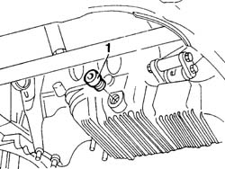

1020A30 ENGINE OIL DRAIN PLUG - Replace
- Path
- Procedures > 10 ENGINE > 1020 CRANKCASE SUMP AND COVERS > 1020A CRANKCASE OIL SUMP > 1020A30 ENGINE OIL DRAIN PLUG - Replace
- Kind
- repair procedure (removal / refitting; the operation number is the code)
- Applies to
- engines: 2.4 JTD 10V; all production periods
- Interactive page
- https://sloeber94.github.io/elrnDB-lThss/en/#/75578
Applies to: all engines; all production periods
 Removing
Removing
 Refitting
Refitting- Position the vehicle on a lift.
See in Op. 7055B54 PROTECTION/GUARD under engine - R.R.
- Position a suitable container for collecting the oil under the sump.
1. Undo the drain plug and collect the oil in the container.

Applies to: all engines; all production periods
Refitting
Removing- Fit the drain plug in the threaded housing in the sump and tighten it to torque.
 | Value - daNm | Fastening | Component | Ø |
|---|---|---|---|---|
. | 2 | Plug | ENGINE OIL DRAIN PLUG | M18 X 1.5 |
- [0010T11]
See in Op. 7055B54 PROTECTION/GUARD under engine - R.R.
- Remove the vehicle from the lift.